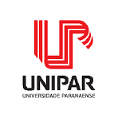
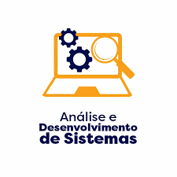

Metodologias Ágeis
Extreme Programming
Criada em 1997 o XP possui adeptos e outros que duvidam da sua real utilidade, muitos por falta de
conhecimento ou entendimento achando que no XP apenas código é o que realmente interessa descartando o resto
como planejamento, documentação etc.
O XP é um método de desenvolvimento de software, leve, não é prescritivo, e procura fundamentar as suas
práticas por um conjunto de valores que serão vistos posteriormente no artigo. O XP, diferentemente do que
muitos pensam, também pode ser adotar por desenvolvedores médios e não apenas por desenvolvedores
experientes.
O objetivo principal do XP é levar ao extremo um conjunto de práticas que são ditas como boas na engenharia
de software. Entre elas podemos citar o teste, visto que procurar defeitos é perda de tempo, nós temos que
constantemente testar. Mas o XP possui mais práticas do que apenas testar, entre as práticas, o XP diz que:
Já que testar é bom, que todos testem o tempo todo;
Já que revisão é bom, que se revise o tempo todo;
Se projetar é bom, então refatorar o tempo todo;
Se teste de integração é bom, então que se integre o tempo todo;
Se simplicidade é bom, desenvolva uma solução não apenas que funcione, mas que seja a mais simples
possível;
Se iterações curtas é bom, então mantenha-as realmente curtas;
Valores do Extreme Programming
As práticas do XP são fundamentadas em valores. Veremos cada um dos valores do XP. Entre os valores temos:
Comunicação: segundo Beck “Os problemas nos projetos invariavelmente recaem sobre alguém
não falando com
alguém sobre algo importante”. Assim, a comunicação enfatiza que devemos sempre estar se comunicando seja
entre desenvolvedores ou com os clientes. XP é organizado em práticas que não podem ocorrer se não houver
comunicação. De preferência os clientes devem estar sempre presentes para criar Histórias de usuário e
cliente on-site (CCC) ou ainda tirar dúvidas. Outra forma de comunicação no XP é a Programação em pares,
onde os desenvolvedores programam num mesmo computador, nesse formato de programação ambos estão
constantemente se comunicando e trocando ideias. O Jogo do planejamento (planning poker) também é outra
forma de comunicação visto que a equipe de desenvolvimento está dando sua visão técnica, o cliente por sua
vez está dando requisitos em pró do negócio e dando as prioridades. A comunicação ajuda na eliminação de
documentos e favorece a comunicação face a face.
Simplicidade: é tentar fazer o mais simples possível e caso seja necessário faremos algo
mais complexo
amanhã. Muitas vezes algo é feito de forma completa e posteriormente não é mais sequer usado ou necessário.
Portanto, entre os princípios temos: Qual é a coisa mais simples que funciona?
Aqui também temos a importância do coach que deve estar sempre verificando se a simplicidade está sempre
sendo seguida nos projetos.
Fazendo um paralelo entre a simplicidade e a comunicação conclui-se que a simplicidade faz com que temos
menos a comunicar e de uma forma mais completa e por sua vez a comunicação faz com que transmitimos mais
clareza e confiança para alimentar a simplicidade.
Feedback: é muito presente no SCRUM através das reuniões diárias, retrospectiva, reuniões
de revisão do
produto etc. Feedback é o valor primordial dentro do desenvolvimento ágil. O XP foi o precursor a falar em
feedback e afirma que ele possibilita que o software evolua. O XP, como algo mais técnico que o SCRUM, diz
que devemos sempre “Perguntar ao software, e não a um documento", uma forma de alcançar isso é através dos
testes automatizados que permitem feedback rápido. Os testes automatizados respondem de forma imediata se
aquilo que foi introduzido ainda está funcionando.
O Feedback precisa ser cedo para sabermos se estamos fazendo a coisa correta, precisa ser concreto
perguntando diretamente ao código e precisa ser constante através de iterações curtas, incrementos e
releases. Aqui garantimos constantemente junto ao cliente se estamos fazendo certo e o prazo está seguindo
bem o planejado.
Coragem: muitas vezes não fazemos as coisas porque não temos coragem de fazer as mudanças.
XP diz que
devemos ter coragem de sempre colocar o cliente a par do que está acontecendo. Entre aquilo que o XP
considera que devemos ter coragem de fazer destacam-se:
Acreditar na capacidade de reagir a mudanças;
Trocar de paradigma;
Aprender com os erros;
Dar e receber feedback sem medo das consequências;
Acreditar no feedback concreto (não na “teoria”);
Fazer o que precisa ser feito;
Jogar fora código ruim;
Jogar fora protótipos criados para testar ideias.
Coach: é uma pessoa responsável por garantir a aderência a estes valores nas práticas. O
Coach normalmente
é uma pessoa experiente que também ajuda as equipes a implementarem o XP e monitorar se as coisas estão
sendo bem seguidas.
Feature Driven Developement
FDD
o FDD “Feature Driven Developement” é uma delas. Concebido originalmente por Jeff de Luca, o FDD surgiu em
Singapura, entre os anos de 1997 e 1999 com base no método Coad (Criado por Peter Coad – 1980/1990) e nos
processos interativos e lean já utilizados por Jeff de Luca.
O FDD busca o desenvolvimento por funcionalidade, ou seja, por um requisito funcional do sistema. É prático
para o trabalho com projetos iniciais ou projetos com codificações existentes. Apesar de ter algumas
diferenças entre o FDD e o XP, é possível utilizar as melhores práticas de cada metodologia. O FDD atua
muito bem em conjunto com o Scrum, pois o Scrum atua no foco do gerenciamento do projeto e o FDD atua no
processo de desenvolvimento.
O FDD possui cinco processos básicos.
Desenvolvimento de modelo abrangente (Análise orientada por objetos);
Construção de lista de funcionalidades (Decomposição funcional);
Planejar por funcionalidade (Planejamento incremental);
Detalhe por funcionalidade (Desenho orientado a objetos);
Construção por funcionalidade (Programação e teste orientado a objetos).
Assim como acontece na metodologia XP, o FDD faz uso de teste de software. Desta forma é possível utilizar
TDD, aliás, é indicada a utilização deste para manter a qualidade do software.
KANBAN
O Kanban é proeminente entre as equipes atuais de software ágil e DevOps, mas a metodologia Kanban tem mais
de 50 anos. No final da década de 1940, a Toyota começou a otimizar os processos de engenharia com base no
mesmo modelo que os supermercados usavam para abastecer as prateleiras.
Os supermercados estocam inventário suficiente para atender à demanda do consumidor, uma prática que otimiza
o fluxo entre o supermercado e o consumidor. Como os níveis de estoque correspondem aos padrões de consumo,
o supermercado ganha eficiência significativa na gestão de estoque ao diminuir o excesso de inventário que
deve conter a qualquer momento. Enquanto isso, o supermercado ainda pode garantir que os produtos essenciais
estejam sempre em estoque.
Quando a Toyota aplicou esse mesmo sistema nas fábricas, o objetivo era alinhar melhor os enormes níveis de
inventário com o consumo real de materiais. Para comunicar os níveis de capacidade em tempo real no chão de
fábrica (e aos fornecedores), os trabalhadores passariam um cartão, ou "kanban", entre as equipes.
Quando alguém esvaziava uma caixa de materiais usados na linha de produção, um cartão kanban era passado
para o depósito descrevendo qual material era necessário, a quantidade exata desse material e assim por
diante. O depósito teria uma nova caixa desse material esperando, que eles enviariam para o chão de fábrica
e, por sua vez, enviariam um kanban próprio ao fornecedor. Embora esse processo tenha evoluído desde a
década de 1940, esse mesmo processo de fabricação "just in time" (JIT) continua sendo central para a
metodologia kanban.
Hoje, as equipes ágeis de desenvolvimento de software conseguem aproveitar os mesmos princípios do JIT,
combinando a quantidade do trabalho em andamento (WIP) com a capacidade da equipe. Essa capacidade
proporciona às equipes opções de planejamento mais flexíveis, saída mais rápida, foco mais claro na melhoria
contínua e transparência ao longo do ciclo de desenvolvimento.
Embora os princípios centrais da estrutura Kanban sejam atemporais e válidos a quase todos os setores,
equipes de desenvolvimento de software alcançaram grande sucesso com a prática ágil. Ao contrário da
implementação do método Kanban no chão de fábrica, que envolveria alterações nos processos físicos e a
adição de materiais substanciais, as únicas coisas físicas que as equipes de software precisam são o quadro
e os cartões de tarefas, que podem até mesmo ser virtuais.
CRYSTAL
A metodologia Crystal é uma abordagem ágil para o desenvolvimento de software e a gestão de projetos que
enfatiza a importância da adaptação às necessidades específicas de cada projeto. Criada por Alistair
Cockburn, um dos pioneiros na área de métodos ágeis, essa metodologia visa aprimorar a comunicação, a
colaboração e a entrega de valor aos clientes.
Ao contrário de abordagens mais rígidas e prescritivas, a metodologia Crystal abraça a ideia de que não
existe um único tamanho para todos os projetos. Ela reconhece que a complexidade e os desafios podem variar
significativamente de um projeto para outro, assim como as capacidades e as experiências das equipes
envolvidas.
Portanto, em vez de impor processos inflexíveis, a metodologia Crystal oferece um conjunto de princípios e
parâmetros que podem ser adaptados segundo as características únicas de cada projeto.
A metodologia Crystal é amplamente reconhecida por sua abordagem flexível e adaptável, que a torna uma
escolha valiosa para uma ampla gama de projetos.
Ela se baseia em uma série de parâmetros desenvolvidos para proporcionar uma estrutura sólida, ao mesmo
tempo, em que permite a personalização conforme as necessidades específicas de cada projeto.
Nesse contexto, destacam-se dois parâmetros que desempenham um papel fundamental na metodologia Crystal:
Crystal Clear
Projetos pequenos, que envolvem equipes pequenas e podem ser facilmente gerenciados com comunicação direta.
Yellow
Projetos de tamanho médio que exigem um nível moderado de coordenação e documentação.
Orange
Projetos maiores, que podem envolver várias equipes e demandar processos mais estruturados.
Red
Projetos de grande porte e alta complexidade, que requerem abordagens formais e rigorosas.
Parâmetro por nível crítico de projeto
C (Comfort)
Projetos que, se falharem, terão um impacto mínimo nas operações da empresa.
D (Discretionary Money)
Projetos com maior impacto financeiro, mas que ainda podem ser ajustados sem grande prejuízo.
E (Essential Money)
Projetos cruciais para a sobrevivência ou o crescimento da empresa.
L (Life)
Projetos que envolvem a própria existência da organização.
Microsoft Solutions Framework
O Microsoft Solutions Framework (MSF) surgiu em 1994 como um conjunto de boas práticas coletadas pela
Microsoft a partir de sua experiência na produção de software e serviços de consultoria. Desde então, o MSF
evoluiu, tornando-se um framework flexível para guiar o desenvolvimento de projetos de software. Como
principais características, temos o estabelecimento de papéis bem definidos, a definição e implantação das
boas práticas em fluxos de trabalho e atividades.
Ainda sobre o contexto da popularização dos processos ágeis, o MSF foi lançado em duas variações, uma
abordando metodologias ágeis e a outra, processos tradicionais (metodologias clássicas). A variação “ágil”
do MSF recebeu o nome de “MSF For Agile Software Development”, que será chamado a partir daqui de MSF Ágil
por questões de simplicidade.
Mindsets – Um mindset é uma coleção de valores que determina como as pessoas envolvidas irão
interpretar e
reagir às situações do cotidiano de um desenvolvimento de software. Os mindsets devem estar na mente de cada
membro da equipe desde o início do projeto até o seu final. Existem oito mindsets no MSF, que estão
detalhados abaixo.
1. Qualidade definida pelo cliente - Clientes parceiros e satisfeitos são a prioridade de uma
boa equipe e
de um bom projeto de software. Focar no cliente durante o desenvolvimento significa um compromisso da equipe
em relação à compreensão e resolução dos problemas, pois, uma vez que o problema de negócio foi
compreendido, o envolvimento do cliente precisa ser maximizado até um grau que garanta o alinhamento das
expectativas deste com o projeto.
2. Orgulho no trabalho individual – Sentir orgulho em contribuir para um projeto é importante
na criação de
um produto de qualidade, onde motivação e senso de responsabilidade são conseqüências notáveis desta
prática.
3. Equipe em pares – Apesar de não ser apreciada pela maioria dos programadores, ao
estabelecer valor igual
para cada grupo de papéis do modelo de equipe, é necessário que haja comunicação irrestrita entre os papéis,
transparência e um conjunto único e visível de pendências. O resultado é um aumento na prestação de contas
da equipe e uma comunicação efetiva.
4. Entrega Freqüente de Versões – Com o principal objetivo de estabelecer credibilidade, nada
pode ser
melhor do que uma entrega freqüente do produto funcionando, mesmo que com apenas parte de suas
funcionalidades, pois, além de ter um produto cada dia mais próximo de ser entregue em definitivo, responder
às necessidades dos clientes com pequenas versões de qualidade mostrará progresso e comprometimento. Através
da entrega de versões freqüentes, o processo e a infra-estrutura são provados e melhorados. Riscos, defeitos
e requisitos não-detectados são percebidos com antecedência. Assim, o feedback pode ser dado sempre que
necessário.
5. Desejo de aprender – Os membros das equipes podem focar em melhorias pessoais, coletando e
compartilhando
o conhecimento e as lições aprendidas no dia a dia. Além disso, existirão oportunidades para implementar
práticas comprovadas por outros e reservar tempo do cronograma para a aprendizagem e estudos.
6. Tornar-se específico cedo – Vários projetos perdem tempo em busca de soluções genéricas ao
invés de lidar
com problemas solucionáveis. Este mindset ressalta a necessidade de dar um passo de cada vez, aprendendo do
específico ao invés do abstrato.
7. Qualidade de Serviço – Este mindset acompanha a solução do projeto e desenvolve planos
baseados em cada
aspecto da experiência do cliente. A idéia é que qualidades de serviço como performance e segurança não
podem ser consideradas no final do projeto, mas através dele como um todo.
8. Cidadania - Foca no controle de recursos do projeto, corporativos e computacionais. A
cidadania pode ser
considerada de várias formas, desde a condução do projeto de uma maneira eficiente até a otimização do uso
de webservices.
Princípios do Microsoft Solutions Framework para Desenvolvimento Ágil de
Softwares
Para uma melhor compreensão, foram definidos 7 (sete) princípios do Microsoft Solutions Framework (MSF) para
Desenvolvimento Ágil de Softwares, sendo eles:
1. Parceria com o cliente – Aprovação, acompanhamento e consideração por parte do cliente é a
diferença
entre valor de negócio real e fictício. Entender a proposta de valor da sua solução e comunicá-la
efetivamente é um atributo chave de sucesso.
2. Trabalho em direção a uma visão compartilhada – Uma visão compartilhada garante que todos
os membros da
equipe enxerguem os objetivos do projeto sob uma mesma ótica.
3. Qualidade é trabalho de todos - Qualidade requer tanto prevenção de “bugs/problemas”
quanto verificação
de possíveis soluções. Análise de código e revisões em pares são utilizadas para realizar estas duas
tarefas. Todos os papéis são responsáveis pela prevenção e verificação dos problemas.
4. Manter-se ágil, adaptar-se às mudanças - Quanto mais uma organização procura maximizar o
impacto no
negócio de um investimento em tecnologia, mais ela descobre novos ambientes e desafios. Estes ambientes
estão sempre sujeitos a mudanças e a experimentação resulta em novas descobertas, que podem ou não serem
aplicados no projeto.
5. Encorajar comunicação aberta - Para maximizar a efetividade individual dos membros da
equipe, a
informação precisa estar prontamente disponível para que assim seja constantemente compartilhada.
6. Faça da implantação um hábito – A equipe deve estar comprometida em criar um produto de
qualidade,
inclusive enquanto realiza mudanças e atualizaçãoes. Cada mudança deve ser feita com a certeza de que o
produto deve estar pronto para ser implantado a qualquer hora.
7. Fluxo de valor - Planejamento, execução e medição do progresso e velocidade devem ser
baseados na entrega
de valor de negócio sempre agregando valor para o cliente. Atividades que não agregam valor de negócio devem
ser minimizadas e deixadas como segundo plano para o projeto.